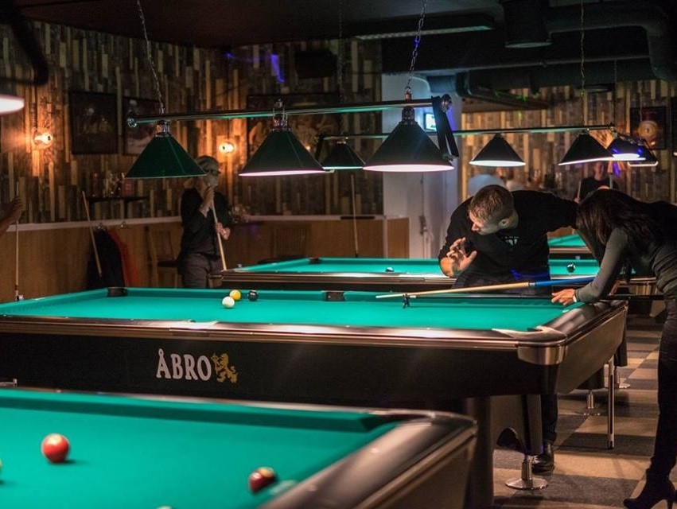
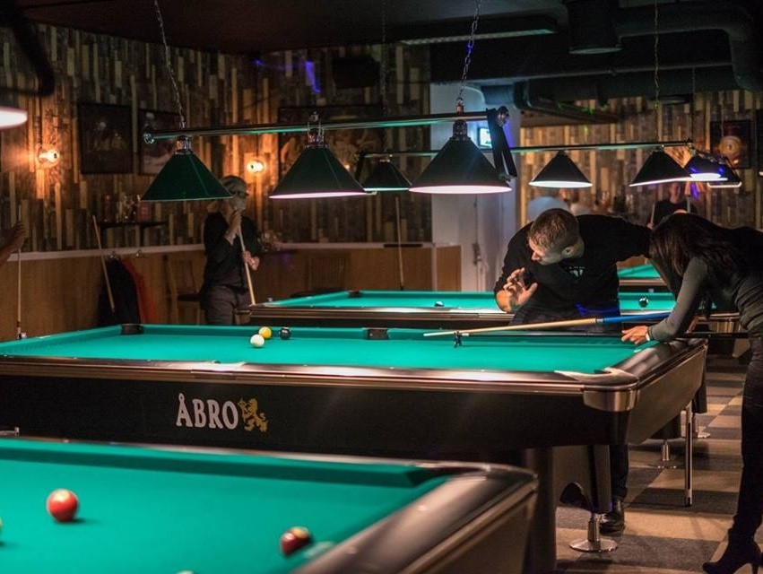

What to do
Jönköping is a lovely city located in Småland Sweden. Not only does it
have a beautiful architecture with lovely sights, but a long list of
things to do as a tourist, student or whathever reason you have to be
here.
popular activity taking place in jönköping is prison islans, where you
group up with friends and take on tricky rooms to get points for
completing them.
For all the shopping freaks, there is plenty of stores in the shopping
center Asecs, having everything you can ask from a shopping center. A
day at Asecs with some friends or family is always a good day.
As a final advice I would encourage you to go see some sight tourist
attractions, such as tändstickmuseet, rådhusparken, strömbergs
naturreservat and take walk beside vätten.
Night Out
As a student in Jönköping, there is a special place for them called
akademin.
This is where hunderds of student gather on wednesdays to party and
socialize from all around the world.
Another place to go out to is shooters, a sports bar with plenty of
good vibes.
Where to eat
 

Harrys
A popular hamburger resturant in Jönköping is Harrys.
They serve burgers, toasts meatballs, pasta and much more.

Jungle Thai
If you are feeling for a bit more asian food, jungle Thai is the
perfect option.
A popular resturang among the people in the town, highly recomended.